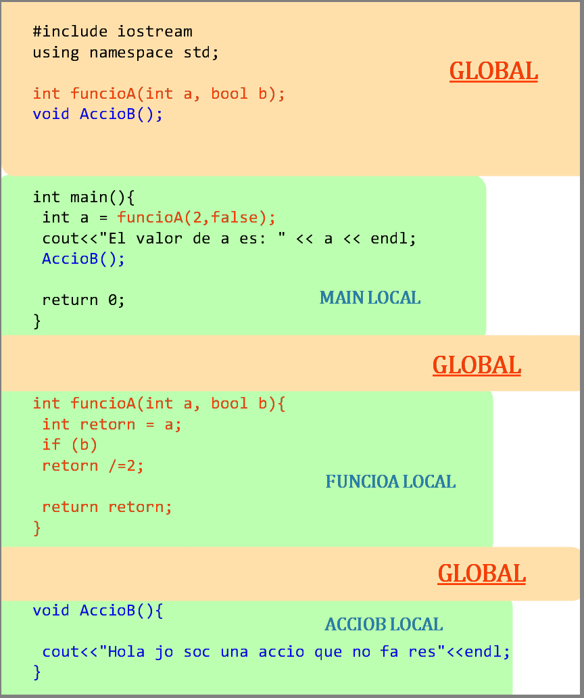

ENTORNS
Quins entorns hi ha en un programa
Global
i elLocal
. La principal diferència entre ells, és que el global és tot allò que no està dins d'una acció o funció mentre que el local és al invers.A la següent imatge podem veure els diferents entorns en un programa de c++

Errors comúns
Crides a funcions desconegudes:
tot àmbit local té coneixament de d'una part de l'àmbit global, concretament, de tot l'àmbit global anterior al seu propi àmbit. Per exemple,FuncioA
té coneixament de tot fins arribar a la seva implementació.Encara que la implementació de l'ACCIOB sigui posterior, recordem que la capçalera és anterior Implementació en backwards
Quan fem una implementació en "backwards", és a dir, al mateix moment que la declarem, hem de ser conscients, que aquella funció coneix tot fins arribada la seva implementació, i per tant, no podrà cridar cap acció o funció, ni utilitzar cap estructura de dades declarada a posteriori.Crides a variables locals d'altres funcions:
recordem que tot el que sigui declarat dins d'una acció o funció, està declarat dins de l'àmbit local, i per tant ningú més el conèix.Ús inapropiat de variables globals:
Les variables globals en general són una mala praxis, i s'han d'evitar tant com sigui possible ja que fa que el programa no sigui robust. Únicament es permeten les variables globals en cas de serconstants
universals pel programa. Com per exemple: el nombre pi, la constat de gravitació, o una constant pròpia.